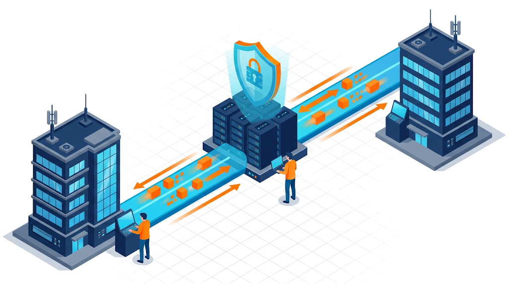
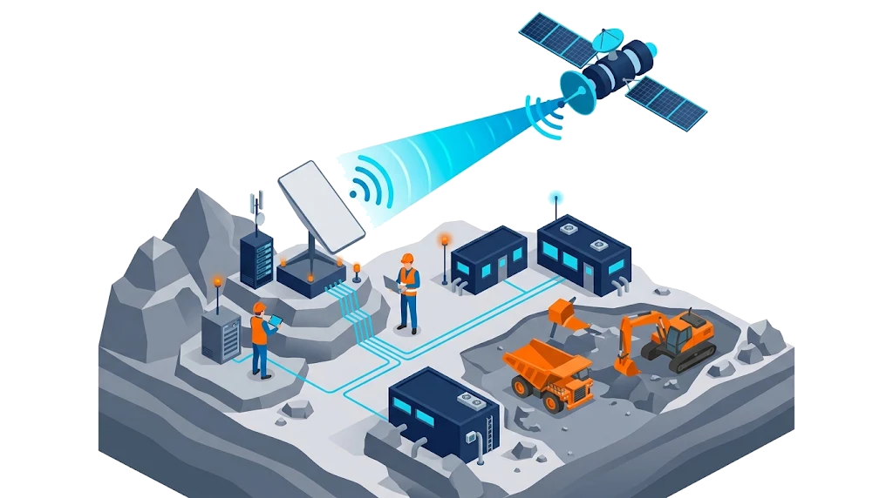
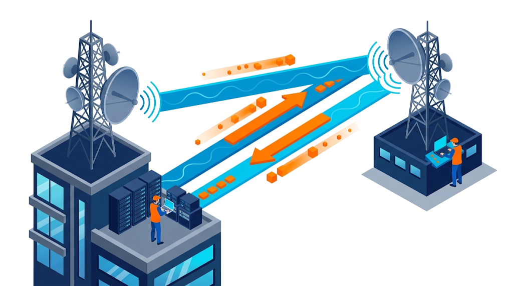
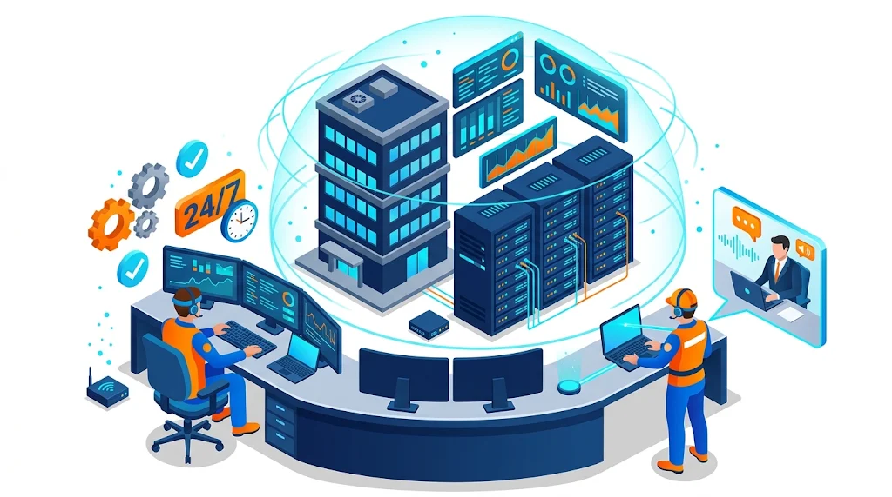
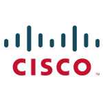
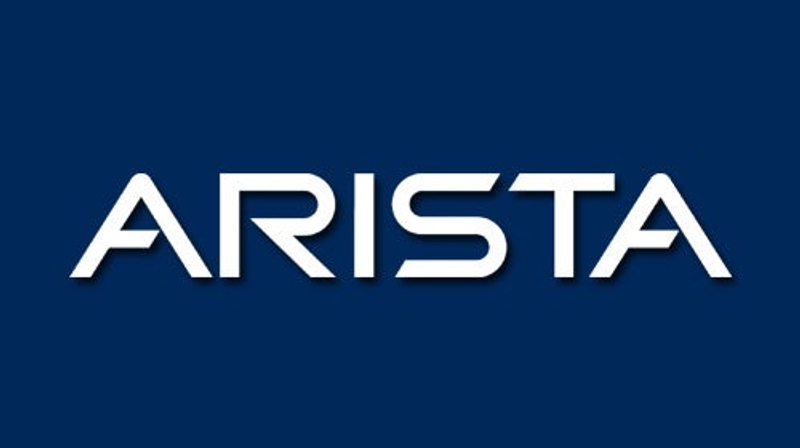
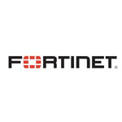
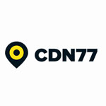

ISONet Perú · Proveedor de Servicios Digitales
Internet dedicado para
el ritmo de tu empresa
Conecta tus sedes, sistemas y equipos con fibra óptica simétrica y más soluciones de telecomunicaciones para el desarrollo de tus operaciones.
Sin límite de consumo
CONECTIVIDAD QUE ACERCA
Cobertura nacional
en los 24 departamentos
Conectividad para empresas con sedes descentralizadas y operaciones en distintas regiones. La tecnología disponible se confirma para cada ubicación según cobertura y factibilidad técnica.

Tu conexión con respaldo
Infraestructura propia
Infraestructura propia y de aliados que permite evaluar alternativas de conectividad y transporte según la ubicación de cada sede.
Soporte especializado
Equipo técnico disponible 24/7 para revisar incidencias, orientar el diagnóstico y coordinar el seguimiento del servicio.
Capacidad simétrica
Internet dedicado con capacidades de 1 Gb a 100 Gb, simetría 1:1 y sin límite de consumo, sujeto a factibilidad técnica.
Seguridad perimetral
Opciones de firewall, mitigación DDoS, DNS redundado y control de aplicaciones, definidas según el alcance del servicio.
Soluciones para
cada operación
Elige la solución que mejor se adapta a tus sedes, equipos y necesidades de conectividad.
Línea dedicada simétrica
Conecta tus sistemas empresariales con capacidad simétrica para los procesos que dependen de una conexión estable.
- Capacidad simétrica 1:1
- Direcciones IP públicas
- Fibra monomodo o cobre

Transporte de datos
Integra sedes y redes para que la información y los recursos corporativos circulen entre tus ubicaciones.
- Fibra de alta capacidad
- Enlace entre sedes
- Interconexión de redes

Internet satelital
Mantén conectados campamentos y operaciones ubicados fuera del alcance de redes terrestres.
- Conectividad en zonas remotas
- Alternativa para campamentos
- Evaluación según ubicación
Telefonía IP
Atiende a tus clientes y coordina equipos desde una plataforma de telefonía IP empresarial.
- Central telefónica IP
- Anexos y comunicación unificada
- Voz para clientes y equipos

Enlaces digitales de doble vía
Comunica ubicaciones de operación mediante un enlace de radiofrecuencia bidireccional.
- Radiofrecuencia bidireccional
- Conexión entre ubicaciones
- Alternativa para zonas remotas
Soporte que acompaña
tu operación

- 01
Reporta tu incidencia
Cuéntanos qué ocurre, en qué sede y desde cuándo. El equipo técnico recibe y revisa incidencias las 24 horas, todos los días.
- 02
Revisión técnica
Revisamos el estado del enlace y la telemetría disponible en PRTG para orientar el diagnóstico.
- 03
Coordinación de la atención
Coordinamos las acciones necesarias y el despacho de cuadrilla en campo si la revisión lo requiere.
- 04
Seguimiento de tu caso
Mantén comunicación constante con nuestro equipo hasta la validación de la operatividad completa.
Nuestros partners tecnológicos




Antes de elegir tu conexión
Respuestas para entender el servicio y preparar tu consulta.
¿La solución está disponible en mi localidad o distrito?
¿Qué información necesito para solicitar una cotización formal?
¿Puedo postular a una licitación pública o concurso privado con ISONet?
¿Qué diferencia técnica hay entre línea dedicada e internet residencial/negocio?
Conversemos sobre
tu conectividad
Indícanos dónde opera tu empresa, qué sedes deseas conectar y qué capacidad necesitas. Evaluaremos el alcance técnico para una cotización a la medida.
Conectemos tu empresa
Coméntanos tu caso para evaluar el requerimiento de tu empresa.